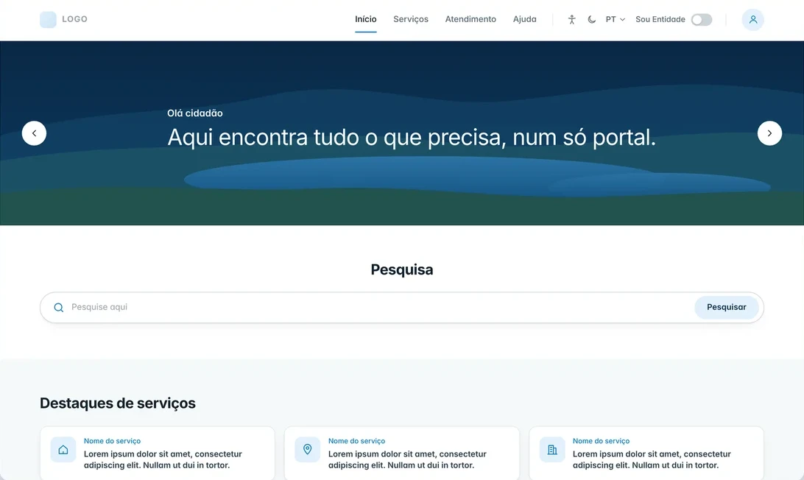
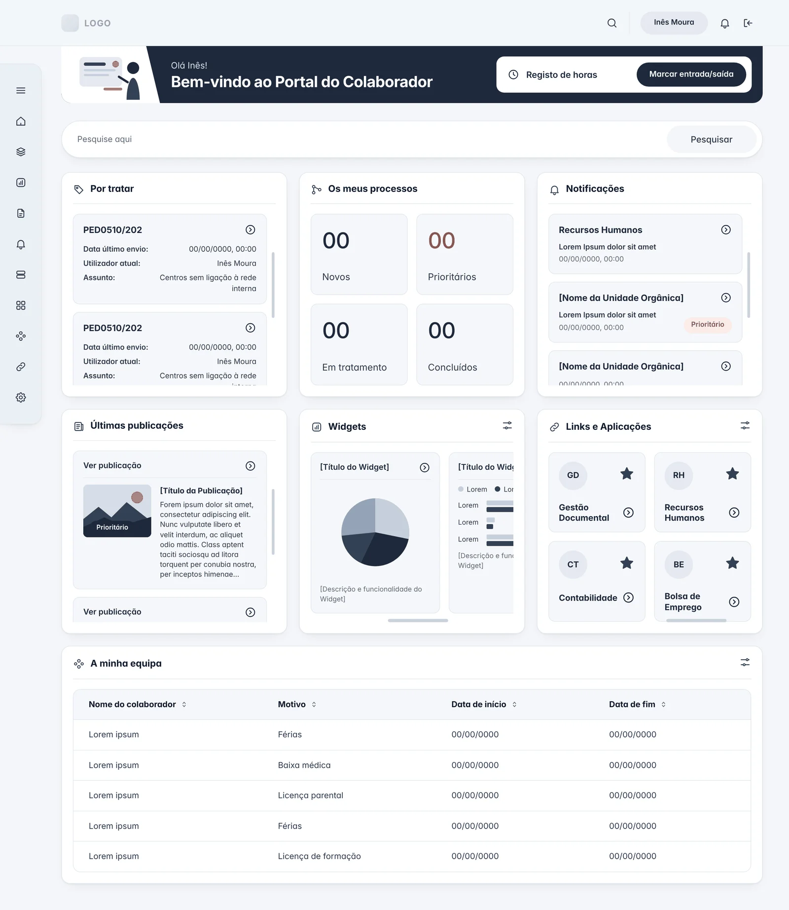
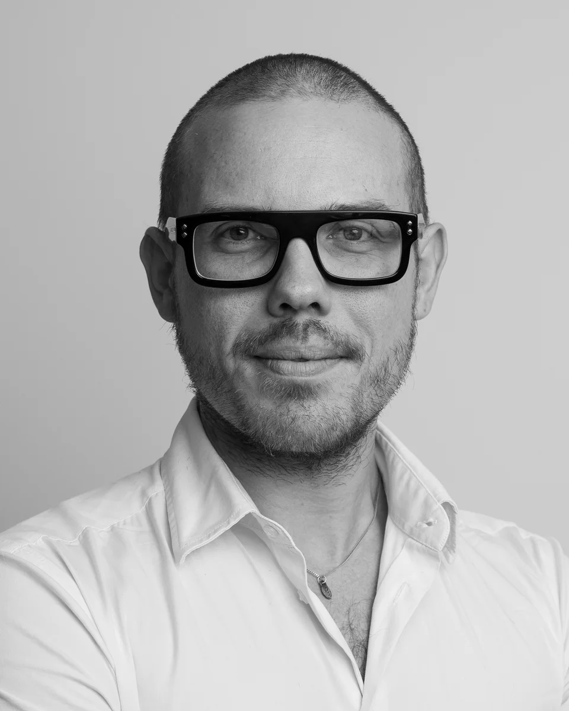

Hola, soy Lucas 👋🏻
Especialista ensoluciones simplespara organizaciones complejas.
Product Designer que se responsabiliza por el resultado, no solo por las pantallas, en la Administración Pública y el sector privado.
Proyectos seleccionados
03 casos¿Y si 150 servicios públicos tuvieran una única puerta de entrada?
El portal del ciudadano de un gobierno regional portugués. De la investigación con ciudadanos y funcionarios al backlog, los sprints y lo que viene después.

¿Pueden cinco fuentes de datos convertirse en una sola decisión?
Una herramienta de selección de lotes para los planificadores de producción de una multinacional de semillas. Discovery, cocreación, tests, handover y lanzamiento.

¿Cómo se diseña para cuatro niveles de gobierno a la vez?
Un sprint cada vez. Un portal del empleado para un gobierno regional portugués, con un equipo, un marco de trabajo y rituales propios.

En el escenario
PonenciaCómo un gobierno regional portugués digitalizó sus servicios públicos, ante nueve delegaciones europeas.
Me invitaron a presentar en directo la jornada del ciudadano en el portal que desarrollamos, donde lideré el diseño de producto: desde encontrar un servicio hasta seguir su solicitud hasta que se resuelve.
Cómo trabajo
Cada proyecto es distinto. El método se adapta al problema, y no al revés.
Descubrir
Hablar con quien hace el trabajo. Mapear el proceso real, no el oficial.
Decidir
Convertir lo aprendido en arquitectura, prioridades y user stories.
Diseñar
Definir el marco, liderar el equipo de diseño, prototipar hasta que funcione.
Entregar
Entregar a desarrollo y acompañar hasta producción: corregir, documentar, medir, evolucionar.
La IA hace el trabajo pesado. Las decisiones son mías.
La uso para leer, mapear y redactar más rápido, y así dedicar más tiempo a las decisiones de producto.
Los datos de los clientes se anonimizan. Todo se revisa antes de llegar a un cliente o a desarrollo.
- User researchMás de 30 entrevistas para el nuevo branding y la web de una consultora, transcritas, etiquetadas y sintetizadas en Dovetail, y convertidas en el resumen ejecutivo con el que defendimos la investigación y las primeras decisiones de diseño ante el consejo directivo. Un 60% menos de tiempo.
- Del pliego al backlogPliegos e informes convertidos en flujos AS-IS y TO-BE, y luego en épicas, user stories y criterios de aceptación en Jira, con la documentación en Confluence. Un pliego de 130 páginas analizado en pocas horas, no en 2 semanas.
- Auditorías de design systemEl design system del Portal de Servicios, heredado de otra agencia, auditado con Claude conectado a Figma por MCP: ~15% de inconsistencias, desde botones sin estados hasta tipografía sin variables. Un 70% menos de tiempo entre auditar y consolidar.
- Prototipos en códigoPrototipos funcionales con Lovable y Claude Code para probar interacciones reales antes del diseño detallado. Este portfolio se construyó de la misma forma.
Sobre mí

Diseño productos como si fueran míos.
Consultoría, agencias, in-house. Lo más reciente: Consultor Senior en una consultora de transformación digital, donde lideré el diseño de producto y también fui responsable de lo que venía después: qué construir primero, los sprints y la entrega, para la Administración Pública y el sector privado.
Trabajo con equipos multidisciplinares y con todas las partes implicadas. Mi papel es que se entiendan: comunicación clara, decisiones tomadas a tiempo y planes de acción concretos, con responsables y plazos.
Antes, años como profesor de UX/UI. Me enseñó a explicar cada decisión: a los stakeholders, a los diseñadores, a desarrollo y a las personas que usan lo que construimos.
- Ahora
- Abierto a puestos de Product Designer que van más allá del diseño: prioridades, sprints y entrega · Remoto o híbrido, España
- Idiomas
- Portugués, español, inglés (C1)
- Formación
- Máster en Diseño, University for the Creative Arts (Reino Unido) · Grado en Diseño, Lusófona · Grado en Filosofía, UFMT
- Docencia
- Lisbon School of Design · Universidad Lusófona